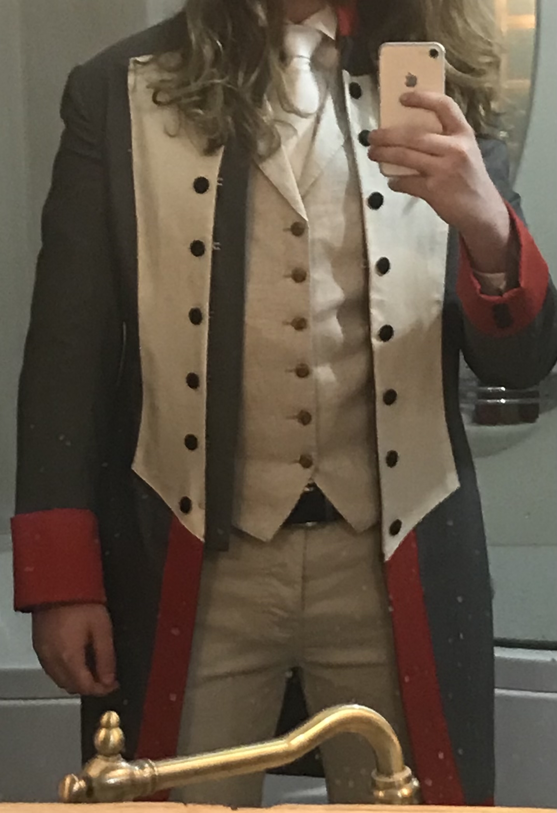
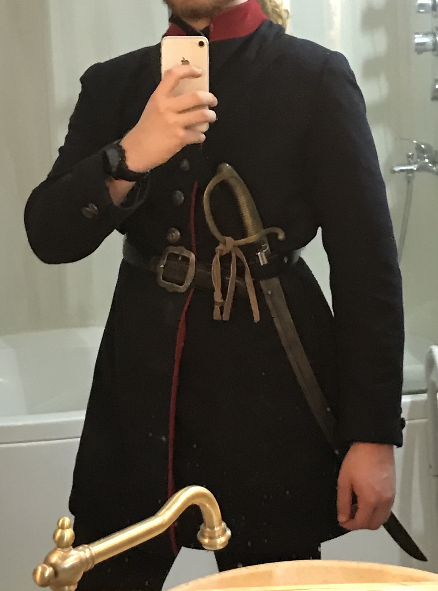
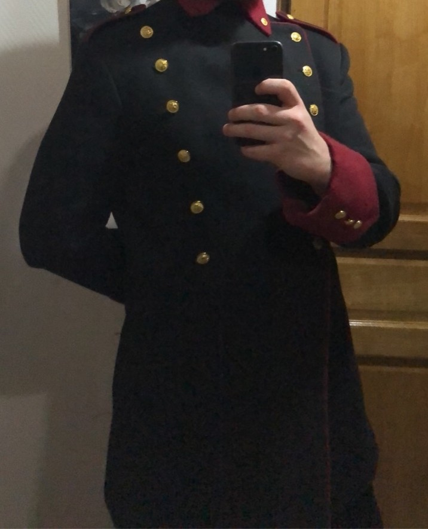

Depuis tout petit je suis passionné d'histoire. Tellement que j'ai même
voulu en faire mon métier et ai d'ailleurs tenté une license en Histoire avant
de changer pour retourner en informatique aux vues des meilleurs débouché.
Je passe des heures entières à lire, écouter, regarder des documentaires à propos
de n'importe quelle période historique, sujet ou domaine. Comme de l'histoire du
traffic de papier paint en 1812 que des grandes épopées hellénistiques.
Centres d'intérêts
Histoire
Musique
Batteur depuis bientôt 8 ans et bassiste depuis 4. Je vois la musique comme un élément
à part entière. Qui m'aide à me concentrer, qui régit mes humeurs, qui me fait
réfléchir. Qui me détend ou me donne de l'énergie. C'est une part entière de ma vie, tout
comme l'histoire.
J'ai d'ailleurs appartenu à un groupe nommé Les Yohan's car composé par hasard de 4 Yohan sur 5 joueurs. Je continue occasionnellement de jouer avec eux.
J'ai d'ailleurs appartenu à un groupe nommé Les Yohan's car composé par hasard de 4 Yohan sur 5 joueurs. Je continue occasionnellement de jouer avec eux.
Le dessin et la peinture
J'aime dessiner et peindre, depuis toujours, mais ce n'est que depuis la fin de mon lycée que
je m'entraine et dessine plus sérieusement. J'aime pouvoir être fier de mon travail
et savoir ce que je fais. Je découvre et perfectionne petit à petit pour pouvoir
exprimer toujours plus mes idées et reproduire ce que je trouve beau dans ce monde.


Et s'ils ne sont pas encore parfait, et que j'ai beaucoup à apprendre. Je suis fier de ce que j'ai fait.
Et s'ils ne sont pas encore parfait, et que j'ai beaucoup à apprendre. Je suis fier de ce que j'ai fait.
La mode
Lié à l'Histoire, dans le sens où j'ai appris à aimer la mode d'abord en m'extasiant sur
les costumes d'époques. J'aime la théorie derrière la mode, les moyennes de couleurs d'un
ensemble. Que porter avec quoi, comment exprimer une idée avec des vêtements. Mais évidemment
aussi la beauté (bien que subjective) des habits. Avec un amour particulier pour les
chaussures et chaussures à talons.
Les costumes historiques
Comme dit plus tôt, je suis subjugué par la beauté et la classe de certains costumes militaires,
ou certains apparats d'époque. J'ai découvert ces costumes grâce à un petit cartoon japonais
appelé Hetalia, portrayant la France en uniforme bleu blanc rouge. Et lui ressemblant de visage,
j'ai cherché à reproduire le même costume étant en réalité inspiré des uniformes d'officiers
Français de 1914. Depuis avec ma grand-mère ancienne couturière. Je dessine et l'aide à fabriquer
ces dits uniformes pour lesquels je fais les recherches. Parfait mélange entre mon amour pour la
mode et ma passion pour l'Histoire.
N'ayant pas de mannequin à ma taille, je me dois de poser moi-même. Mes excuses pour ces poses absolument tout sauf naturelles


